CLUTTER CUP / WORKSHOP 01
Машина на верстаке.
Сборка через саму машину.
Работающий гараж: 3D-выбор, обратимый предпросмотр, нижняя полка и одна кнопка старта. Физика, инвентарь и текущие художественные модели сохранены.
Открыть мастерскую ▶
Попробуйте самостоятельно: сменить одно колесо на бытовой предмет, осмотреть противоположную сторону, отменить эксперимент и начать заезд. Автотесты подтверждают работу, но не заменяют вашу оценку понятности.
Композиция и референс
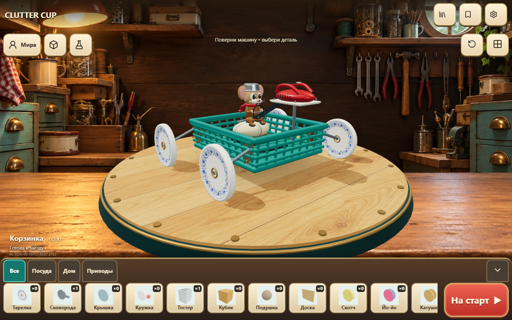
Новый гараж, 1280×800 · нажмите для исходного разрешения Утверждённый референс мастерской · нажмите для исходного разрешения
Утверждённый референс мастерской · нажмите для исходного разрешенияДо / после
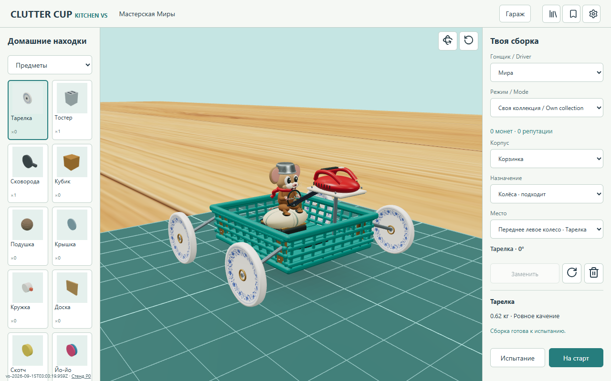
До · 1280x800 · нажмите для исходного разрешенияПосле · 1280x800 · нажмите для исходного разрешения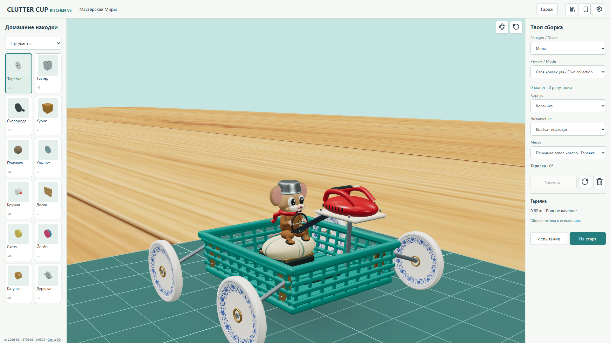
До · 1920x1080 · нажмите для исходного разрешения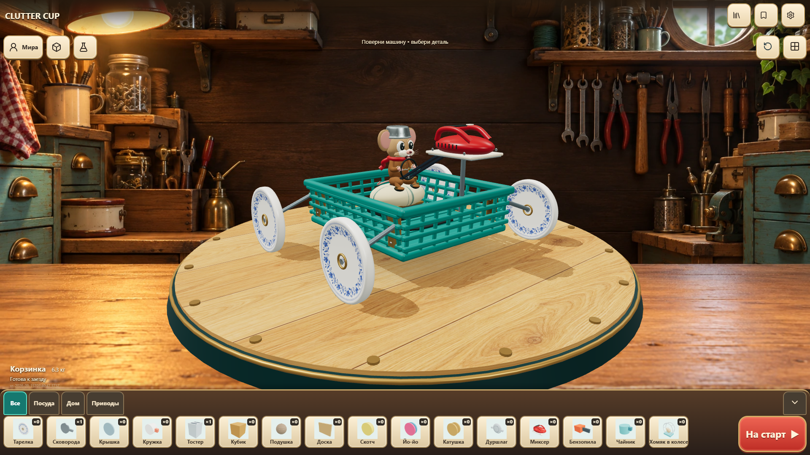
После · 1920x1080 · нажмите для исходного разрешения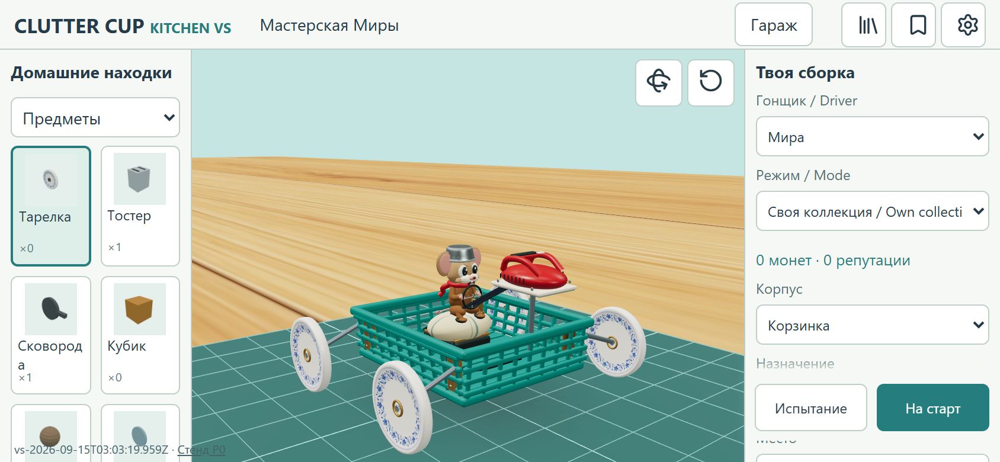
До · 844x390 · нажмите для исходного разрешения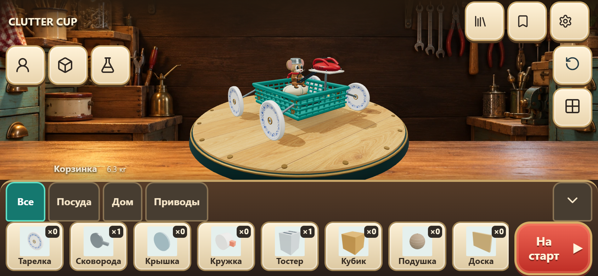
После · 844x390 · нажмите для исходного разрешения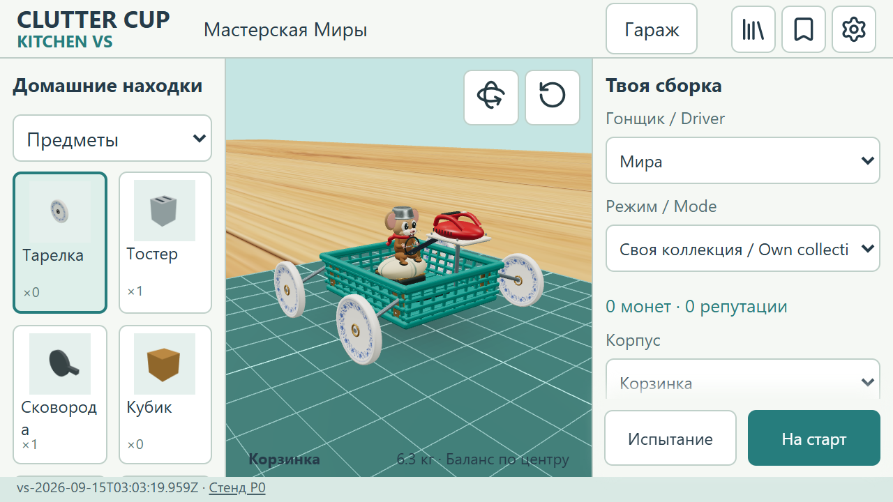
До · 640x360 · нажмите для исходного разрешения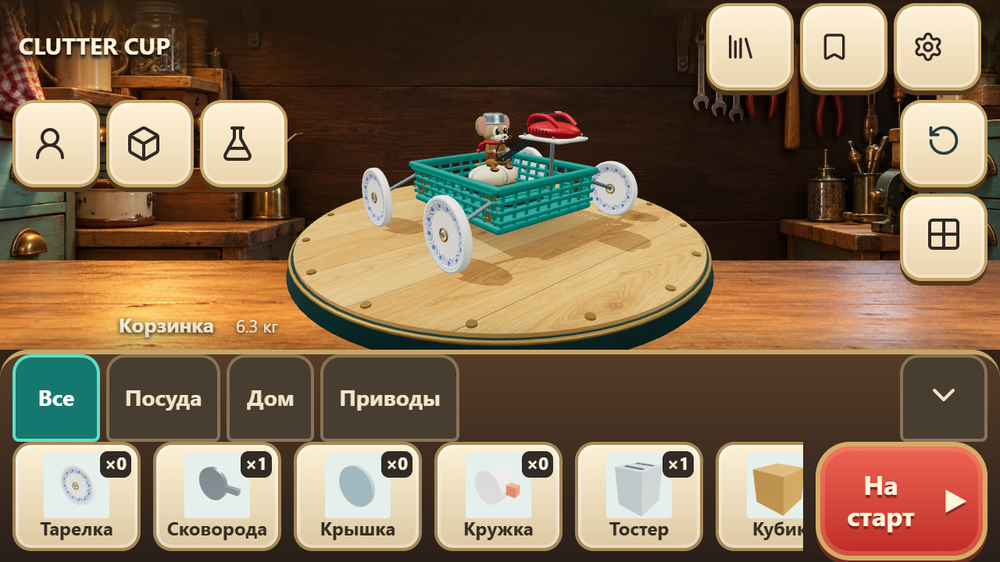
После · 640x360 · нажмите для исходного разрешенияВыбор → предпросмотр → подтверждение
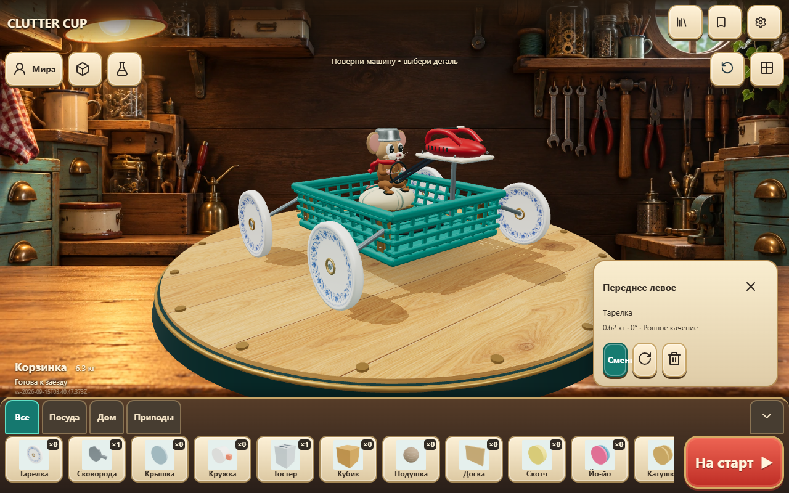
Выбор настоящей детали кликом по машине · нажмите для исходного разрешения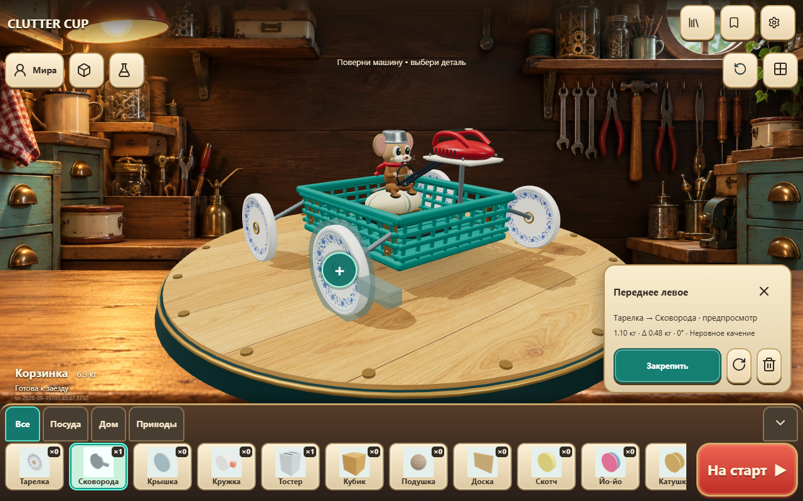
Старая деталь приглушена, новая полупрозрачна · нажмите для исходного разрешения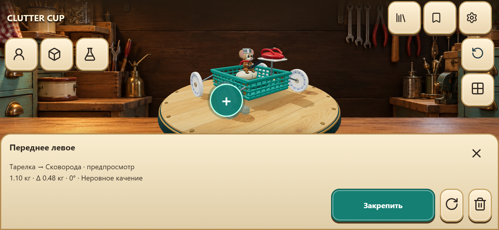
Телефон: один лоток вместо правой панели · нажмите для исходного разрешения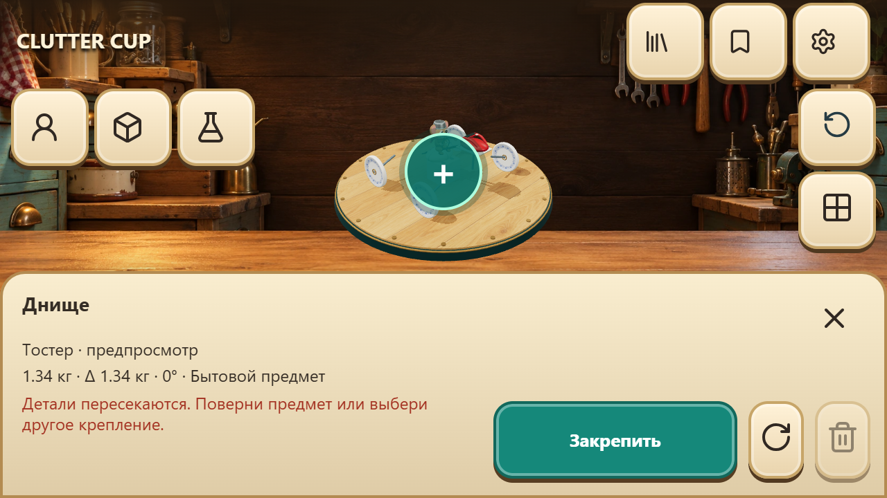
Физическое пересечение отклонено, исходная сборка сохранена · нажмите для исходного разрешенияНепрерывная демонстрация
Реальные действия в браузере: вращение, замена тарелки, поворот и снятие, двигатель, водитель и корпус, отмена, чертёж, режимы, испытание, гонка, возврат и перезагрузка. Без монтажа и подстановки состояния. Идентификаторы экземпляров и сохранённая сборка проверены.
Мобильный переход и safe areas
Viewport/DPR/touch-эмуляция на desktop, не настоящий телефон. Кнопки от56×56 CSSpx. Safe areas проверены с имитацией44px по бокам и21px снизу.
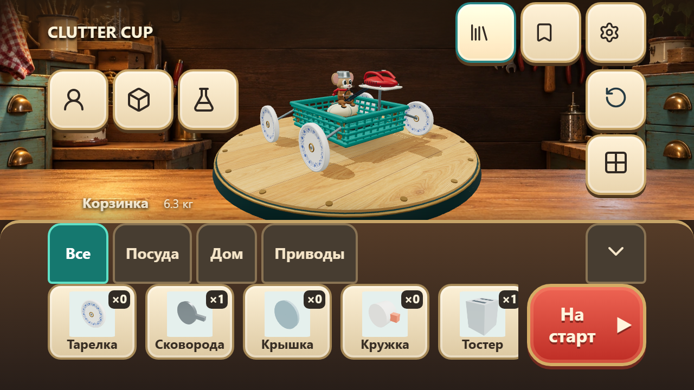
Имитация выреза экрана и нижнего индикатора · нажмите для исходного разрешения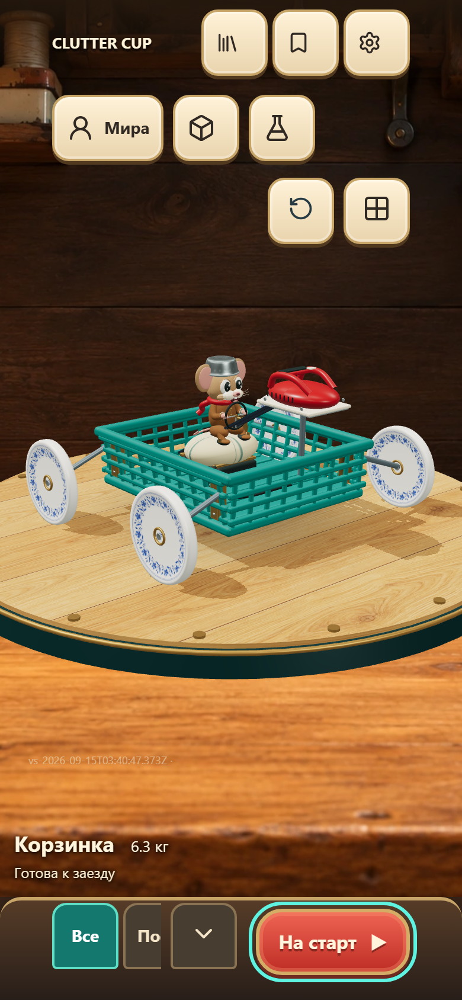
Переход в portrait · нажмите для исходного разрешенияПроизводительность гаража
Один компьютер, Standard, одинаковая базовая машина,180RAF отсчётов с уникальными реальными render frameNumber. Новый canvas занимает большую область. Медиана около33мс соответствует прежнему ограничению30FPS. p95 вырос на части размеров примерно на1–2мс; это не обещание отсутствия любого регресса и не тест телефона.
Что сохранено и что отличается
Все крепления доступны через машину и команду «Все крепления». Рекомендации не ограничивают эксперименты. Корпус/водитель, ориентации, снятие, режимы с личной сборкой, испытания, коллекция, резервная сборка, чертежи, настройки и обучение остаются доступны. Нет выдуманных рейтингов или валют.
Референс богаче по рисованной светотени. Дальняя мастерская — статичный слой; машина и круглый верстак — настоящая3D-сцена. Высокий миксер, широкие оси и прежнее несовпадение физической капсулы с сидящей Мирой сохранены по контракту. Для некоторых бытовых предметов используются существующие более простые модели. Нужна пользовательская оценка интуитивности.
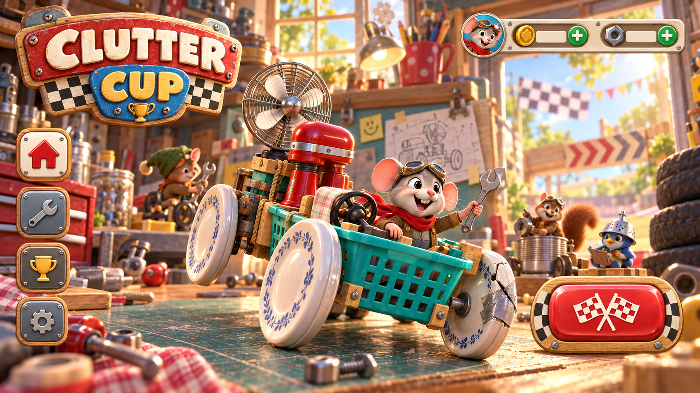
Второй референс: материалы и иерархия · нажмите для исходного разрешения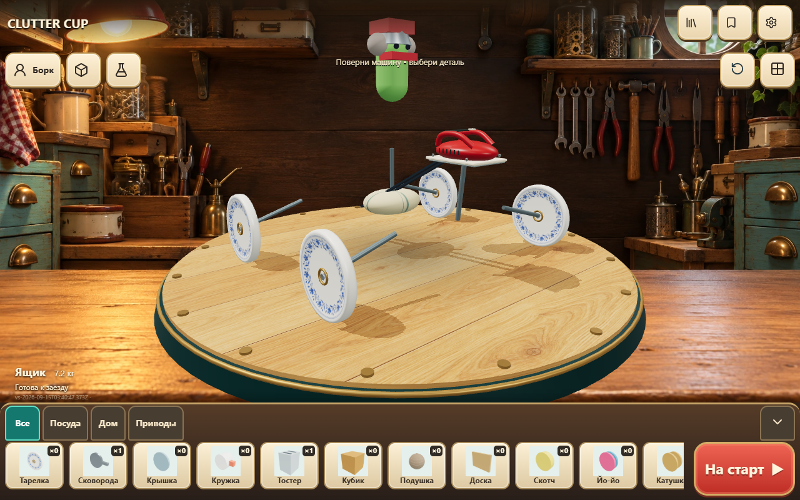
Возврат и восстановление после перезагрузки · нажмите для исходного разрешенияФон создан OpenAI ImageGen для проекта. Кнопки и текст — DOM, иконки — существующий Lucide. Новые физические параметры не вводились. Коммит публикации · Проверить build ID